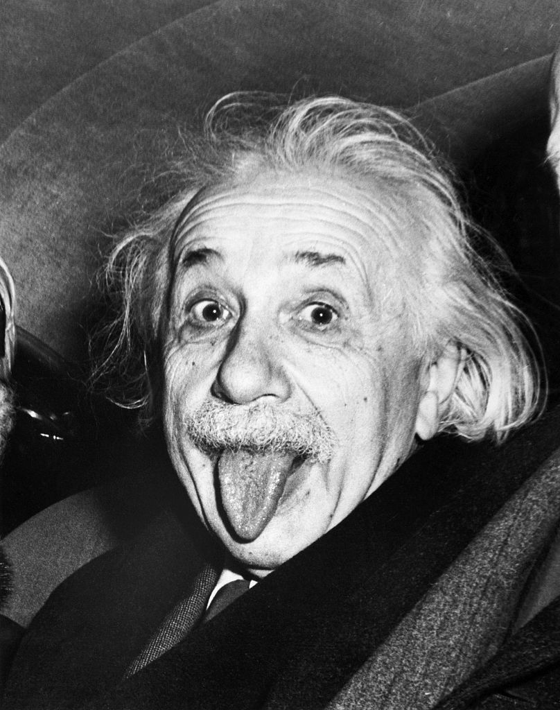

Info about Albert Einstein:
If you are talking about game changing individuals we need to start with Albert Einstein. He was born in Germany in March 14 1879. He moved to the Switzerland in 1895 were he renounced his German citizenship. He graduated from the Swizz Federal Polytechnical School in Zurich. He as later awarded with a PhD by the University of Zurich.
Einstein was the father of many in theories In the physics world. Thanks to E=mc2 we were able to harness the power of the atom. The Manhattan project was the culmination of Einstein’s work. Splitting the atom created such an amount of energy that was not even thought about. The atom bomb was a by-product which helped win WW2. His Relativity Theory has also been controversial since it cannot be reconciled with Quantum Mechanics. He also worked on a theory that led to the discovery of the photon!